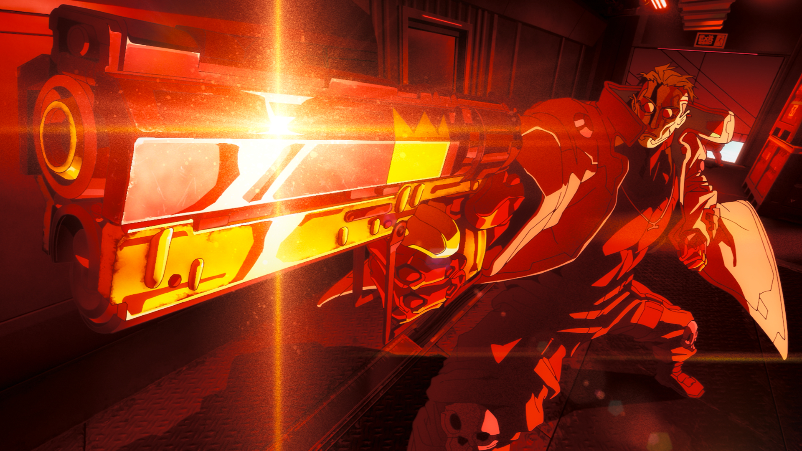

Cyberpunk: Edgerunners Season 2
Official Site



2026 is an important year for many students reaching the end of their college journey. Graduation represents years of studying, adapting to challenges, and working toward future careers.
For many graduates, 2026 also represents a new beginning. Students are preparing to enter fields such as technology, business, healthcare, and many others while taking the skills they developed in college into the next stage of their lives.